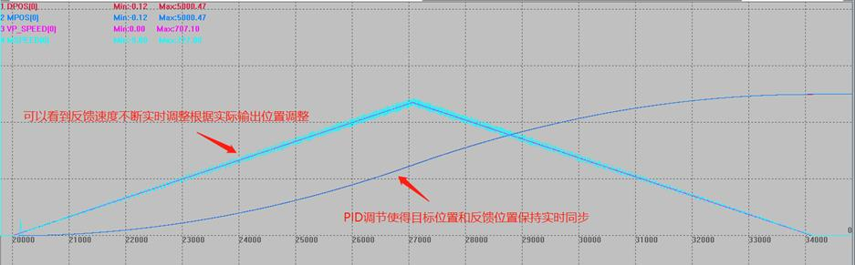
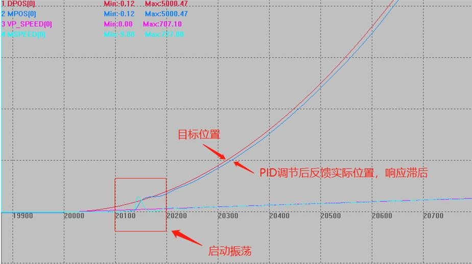

|
类型 |
轴参数 |
|
描述 |
闭环开关设置。 值范围：ON/OFF，缺省为OFF。 跟P_GAIN，D_GAIN，I_GIAN，OV_GAIN，VFF_GAIN指令配套为闭环控制系统使用，需要使用模拟量伺服。 注意： 1.ECAT总线ATYPE为66，67模式适用。 2.PID只能根据实际情况手动调整至最佳，建议带上负载。 3.PID调节参考口诀： 参数整定找最佳，从小到大顺序查； 先是比例后积分，最后再把微分加； 曲线振荡很频繁，比例度盘要放大； 曲线漂浮绕大湾，比例度盘往小扳； 曲线偏离回复慢，积分时间往下降； 曲线波动周期长，积分时间再加长； 曲线振荡频率快，先把微分降下来； 动差大来波动慢。微分时间应加长； 理想曲线两个波，前高后低四比一； 一看二调多分析，调节质量不会低； 若要反应增快，增大P减小I； 若要反应减慢，减小P增大I； 如果比例太大，会引起系统震荡； 如果积分太大，会引起系统迟钝。 |
|
语法 |
VAR1 = SERVO，SERVO = ON/OFF |
|
适用控制器 |
通用 |
|
例子 |
RAPIDSTOP(2) WAITIDLE TRIGGER '触发示波器
BASE(0) UNITS = 1000 ACCEL = 100 DECEL = 100 SPEED = 1000 CREEP = 100 LSPEED = 0 MERGE = 0 SRAMP = 0 DPOS = 0 MPOS = 0 FE_LIMIT = 10 '修改最大允许随动误差限制范围，超过时告警。 FE_RANGE = 10 '设置告警时的随动误差误差值 P_GAIN AXIS(0) = 100 '比例增益，可以使用指定轴的方式 D_GAIN = 5 '积分增益 I_GAIN = 1 '微分增益 OV_GAIN = 0 '速度增益 VFF_GAIN = 0 '前馈增益 SERVO = ON '闭环控制打开
BASE(0) MOVE(5000) WAITIDLE SERVO AXIS(0) = OFF '关闭闭环控制，可以指定轴关闭，建议每次使用后关闭
DELAY(3000) '3秒后停止测试 DPOS(0) = 0 MPOS(0) = 0 END
整体曲线如下，可以看出DPOS和MPOS在闭环控制下，PID调节二者实时同步。  局部曲线如下：  |
|
相关指令 |